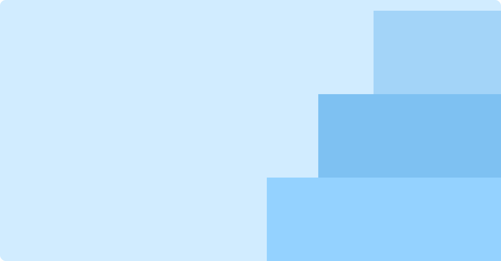
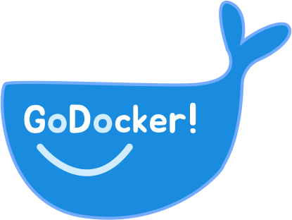
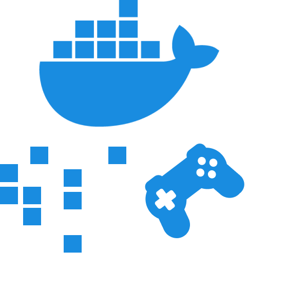
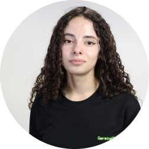
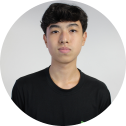
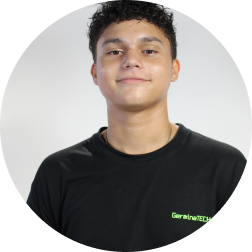
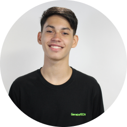
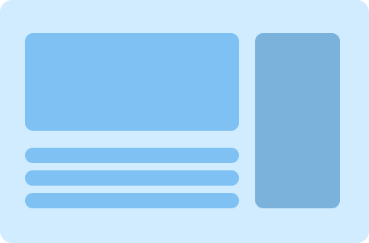
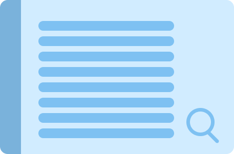

Olá, Usuário!
Boas-vindas ao
Seu guia definitivo sobre o básico de
docker!
Sobre o GoDocker!
O GoDocker! entrega a você a mais forma eficaz e fácil de aprender sobre essa tecnologia essencial no dia a dia dos desenvolvedores. Nosso objetivo é que você saia de cada sessão de aprendizado entendendo o conteúdo de maneira dinâmica. Para facilitar a compreensão dos assuntos, contamos com exercícios gamificados para cada conteúdo lecionado.
Desenvolvimento
Desenvolvedores:

Laura Farias

Nícolas Daichi

Ryan Evangelista

Samuel Xavier
Recursos utilizados

Documentação Oficial

Conhecimento Prévio
Do que eu preciso para começar a
aprender?
Tudo o que você precisa para começar a
sua jornada no GoDocker! é ter o Docker
Desktop instalado. Para isso fizemos um
pequeno tutorial de como você pode fazer isso.